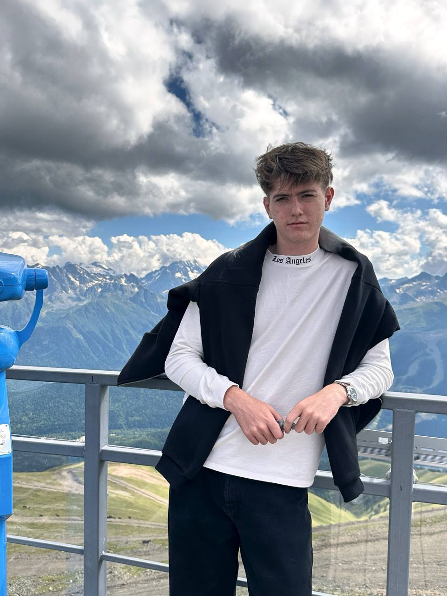

Обо мне

Привет! Меня зовут Арсен
Я веб-разработчик с более чем 2-летним опытом создания современных и функциональных веб-сайтов. Специализируюсь на фронтенд-разработке, но также имею опыт работы с бэкендом.
Мой путь
Начал свой путь в IT с изучения HTML и CSS, затем углубился в JavaScript. Постоянно учусь новым технологиям и слежу за трендами веб-разработки.
Образование
- 2026: Курсы веб-разработки (HTML Academy, Stepik)
- 2025: Самостоятельное изучение
- 2024-2025: Аграрный университет (Информационные системы)
10+
Завершенных проектов
2
Года опыта
100%
Довольных клиентов
Опыт работы
2025 - настоящее время
Frontend-разработчик в WebStudio
Разработка пользовательских интерфейсов, верстка по макетам, работа с React.js
2024
Верстальщик (фриланс)
Создание адаптивных сайтов для малого бизнеса